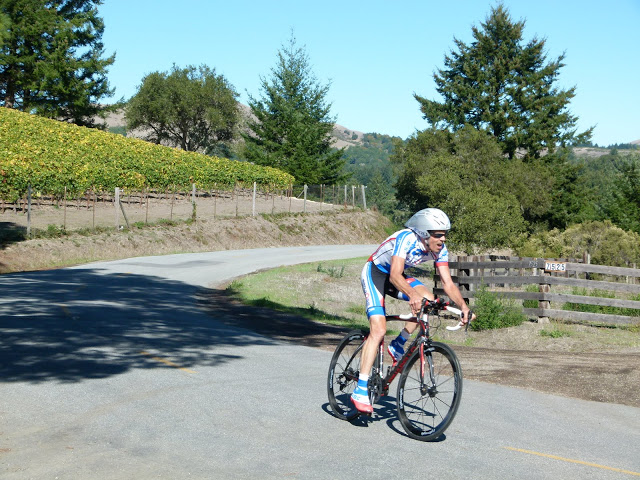

Low-Key Hillclimbs Aggregate Results:
Hwy 84 - West Alpine
generated Fri Nov 4 10:34:14 PDT 2016
|
|  |
| 2012 week 5: Clark Foy had everything dialed in for this week's ride (Luther Pugh) |
Results are listed here from the Low-Key archives, sorted by time for each climb. Some years start and/or finish time differ slightly, such as
with Kings Mt Road where after 1995 the start moved from Entrance Way to Greer.
Results are ranked by time first, score second.
Score is calculated using a simple percent-of-median-speed
formula, with time adjustments for division. These scores will generally differ from those calculated in the results for that particular year, since
the scoring scheme has evolved. Tandems are split between 1998, when they were counted as single participants, and other years, when the individual
riders have been counted separately
Results for Men
| rank | time | score | rider | cat | team | year | week | code |
|---|
| 1 | 53:19 | 120.975 | Clark Foy | 45+ | Western Wheelers | 2012 | 5 | |
| 2 | 53:42 | 120.112 | Tracy Colwell | 40+ | Team Colwell | 2012 | 5 | |
| 3 | 54:15 | 118.894 | Carl Nielson | 50+ | Sr's & Mr's of No Mercy | 2012 | 5 | |
| 4 | 54:48 | 117.701 | Rob Manchester | 35+ | | 2012 | 5 | |
| 5 | 54:56 | 117.415 | Rich Brown | 35+ | The Brown Zone | 2012 | 5 | |
| 6 | 55:27 | 116.321 | Kieran Sherlock | 45+ | Western Wheelers | 2012 | 5 | |
| 7 | 55:42 | 115.799 | Tim Clark | 45+ | Low-Key | 2012 | 5 | |
| 8 | 55:54 | 115.385 | David Collet | 40+ | | 2012 | 5 | |
| 9 | 56:04 | 115.042 | Chris Furgiuele | 35+ | Dolce Vita Cycling | 2012 | 5 | |
| 10 | 56:18 | 114.565 | Jared Hudson | 30+ | Squadra SF | 2012 | 5 | |
| 11 | 56:22 | 114.429 | morgan raines | 40+ | Bike Trip/Symantec | 2012 | 5 | |
| 12 | 56:27 | 114.260 | Kevin Susco | 50+ | Alto Velo | 2012 | 5 | |
| 13 | 56:30 | 114.159 | Daryl Spano | 45+ | San Jose Bike Club | 2012 | 5 | |
| 14 | 57:01 | 113.125 | Rich Hill | 45+ | LGBRC | 2012 | 5 | |
| 14 | 57:01 | 113.125 | James Porter | 3 | Western Wheelers | 2012 | 5 | |
| 16 | 57:02 | 113.092 | Ciaran Byrne | 40+ | Sr's & Mr's of No Mercy | 2012 | 5 | |
| 17 | 57:08 | 112.894 | Robby Cuthbert | 20+ | Hausbert | 2012 | 5 | |
| 18 | 57:26 | 112.304 | Brian Schuster | 25+ | Dolce Vita Cycling | 2012 | 5 | |
| 19 | 58:12 | 110.825 | Dennis Van Hoof | 35+ | Type 1 Diabetes | 2012 | 5 | |
| 20 | 58:21 | 110.540 | H Two Brown | 50- | The Brown Zone | 2012 | 5 | |
| 21 | 58:56 | 109.446 | Kevin Keenan | 55+ | Sr's & Mr's of No Mercy | 2012 | 5 | |
| 22 | 59:05 | 109.168 | Mark King | 45+ | IC3 Hammer Nutrition | 2012 | 5 | |
| 23 | 59:23 | 108.616 | Rob Easley | 45+ | Sr's & Mr's of No Mercy | 2012 | 5 | |
| 24 | 59:29 | 108.434 | Jamy Bacchus | 40+ | Berkeley Bike Club | 2012 | 5 | |
| 25 | 60:13 | 107.113 | Bill Brier | 50+ | Team Fremont FFBC p/b Chipotle | 2012 | 5 | |
| 26 | 60:28 | 106.670 | Travis Retzer | 4 | Eden Bicycles | 2012 | 5 | |
| 27 | 60:39 | 106.348 | Murray Swanson | 45+ | Pen Velo/Pomodoro | 2012 | 5 | |
| 28 | 60:58 | 105.796 | Marcus Gosling | 3 | Alto Velo | 2012 | 5 | |
| 29 | 61:35 | 104.736 | Martin Pieprzyk | | | 2012 | 5 | |
| 30 | 61:55 | 104.172 | Oliver R. Barajas | Junior | Eden Bicycles | 2012 | 5 | |
| 31 | 62:00 | 104.032 | Bill Dvorak | 55+ | | 2012 | 5 | |
| 32 | 62:01 | 104.004 | Takanobu Seimiya | 40+ | Nikon Cycling Club | 2012 | 5 | |
| 33 | 62:03 | 103.948 | Jay Kilby | 45+ | Elkhorn Creek Racing | 2012 | 5 | |
| 34 | 62:13 | 103.670 | J.D. Daniels | 35+ | Eden Bicycles | 2012 | 5 | |
| 35 | 62:40 | 102.926 | chris mickelsen | 55+ | | 2012 | 5 | |
| 36 | 62:41 | 102.898 | john novitsky | 50+ | | 2012 | 5 | |
| 37 | 63:05 | 102.246 | Joe Fant | 50+ | The Brown Zone | 2012 | 5 | |
| 38 | 63:33 | 101.495 | Bryn Dole | 40+ | Blekko | 2012 | 5 | |
| 39 | 63:43 | 101.229 | Jim Perreira | 45+ | | 2012 | 5 | |
| 40 | 64:02 | 100.729 | eric doelling | 50+ | | 2012 | 5 | |
| 41 | 64:14 | 100.415 | Peter Ingram | 55+ | Ind. | 2012 | 5 | |
| 42 | 64:19 | 100.285 | John Richardson | 60+ | Alto Velo | 2012 | 5 | |
| 43 | 64:41 | 99.717 | Brad Fox | 30+ | LGBRC | 2012 | 5 | |
| 44 | 64:57 | 99.307 | Giles Douglas | 35+ | Google | 2012 | 5 | |
| 45 | 65:32 | 98.423 | Alan Weatherall | 50+ | San Jose Bike Club | 2012 | 5 | |
| 46 | 66:00 | 97.727 | Peter Tapscott | 60+ | Webcor | 2012 | 5 | |
| 47 | 66:23 | 97.163 | Plamen Velikov | | SLACer | 2012 | 5 | |
| 48 | 66:55 | 96.389 | Russ McCrary | 50+ | Sr's & Mr's of No Mercy | 2012 | 5 | |
| 49 | 67:03 | 96.197 | Rick Ferrell | 50+ | Bike Trip/Symantec | 2012 | 5 | |
| 50 | 67:12 | 95.982 | Jonas Kellner | 35+ | | 2012 | 5 | |
| 51 | 68:46 | 93.795 | Pierre Doussiere | 50+ | My LowRacer & myself | 2012 | 5 | |
| 52 | 68:59 | 93.501 | Mihai R. | 30+ | Google | 2012 | 5 | |
| 53 | 69:17 | 93.096 | George Bonanto | Clydesdale | Google | 2012 | 5 | |
| 54 | 69:18 | 93.074 | Bob Truel | 45+ | Blekko | 2012 | 5 | |
| 55 | 69:36 | 92.672 | pat callahan | 40+ | Quadzilla Racing | 2012 | 5 | |
| 56 | 69:37 | 92.650 | Matt Wittmann | 25+ | | 2012 | 5 | |
| 57 | 70:15 | 91.815 | Bruno Tourette | 35+ | Palo Verde Velo | 2012 | 5 | |
| 58 | 70:19 | 91.728 | Dave Fitch | 70+ | Pan y Agua | 2012 | 5 | |
| 59 | 70:20 | 91.706 | Nick Bellomo | 30+ | Type 1 Diabetes | 2012 | 5 | |
| 60 | 70:24 | 91.619 | Tom K. | 45+ | Palo Verde Velo | 2012 | 5 | |
| 61 | 70:55 | 90.952 | Mike Gregoire | 45+ | Taleo Racing | 2012 | 5 | |
| 62 | 70:56 | 90.930 | Frank Drobot | 60+ | Western Wheelers | 2012 | 5 | |
| 63 | 71:05 | 90.739 | Kevin Colagiovanni | 25+ | Team DUD | 2012 | 5 | |
| 64 | 71:46 | 89.875 | Kevin Comerford | 30+ | Sr's & Mr's of No Mercy | 2012 | 5 | |
| 65 | 72:18 | 89.212 | Greg Watson | 45+ | Palo Verde Velo | 2012 | 5 | |
| 66 | 72:24 | 89.088 | Brian Haines | 35+ | Taleo Racing | 2012 | 5 | |
| 67 | 72:34 | 88.884 | Stephen Fong | 45+ | CyclePath Racing | 2012 | 5 | |
| 68 | 73:11 | 88.135 | Clay Heberly | 35+ | | 2012 | 5 | |
| 69 | 73:22 | 87.915 | Tim Irvine | 40+ | LGBRC | 2012 | 5 | |
| 69 | 73:22 | 87.915 | Steve Bursley | 45+ | Team Wild Hare | 2012 | 5 | |
| 71 | 74:45 | 86.288 | Bernard Bell | 50+ | | 2012 | 5 | |
| 72 | 76:44 | 84.057 | Nico Sallembien | 35+ | Silicon Valley Triathlon | 2012 | 5 | |
| 73 | 77:07 | 83.640 | Eddie Santos | 25+ | | 2012 | 5 | |
| 74 | 77:47 | 82.923 | Han Wen | 40+ | Grumpy Old Men (GOM) | 2012 | 5 | |
| 75 | 82:32 | 78.150 | Thomas Maslen | 50+ | Western Wheelers | 2012 | 5 | |
| 76 | 83:03 | 77.664 | Luis Valente | 50+ | Palo Verde Velo | 2012 | 5 | |
| 77 | 83:04 | 77.648 | Frank Viggiano | 55+ | Palo Verde Velo | 2012 | 5 | |
| 78 | 84:12 | 76.603 | Scott Byer | 45+ | Google | 2012 | 5 | |
| 79 | 87:30 | 73.714 | Eric Anderson | 40+ | | 2012 | 5 | |
| 80 | 87:34 | 73.658 | Gregory P. Smith | 35+ | Google | 2012 | 5 | |
| 81 | 89:44 | 71.880 | Tim Sutton | 50+ | Plus 3 | 2012 | 5 | |
| 82 | 91:59 | 70.121 | Jeff Weitzman | 45+ | Palo Verde Velo | 2012 | 5 | |
| 83 | 95:35 | 67.480 | Rick Nolthenius | 55+ | Santa Cruz Track Club | 2012 | 5 | |
| 84 | 107:20 | 60.093 | Skyler Colwell | Junior | Team Colwell | 2012 | 5 | |
Results for Hybrid Electric
| rank | time | score | rider | cat | team | year | week | code |
|---|
| 1 | 37:50 | 99.061 | Bill Bushnell | It's Mostly The Bike | Low-Key | 2012 | 5 | |
Results for Women
| rank | time | score | rider | cat | team | year | week | code |
|---|
| 1 | 63:12 | 123.109 | Lisa Penzel | 45+ | The Brown Zone | 2012 | 5 | |
| 2 | 66:59 | 116.155 | Lynn Sestak | 50+ | The Brown Zone | 2012 | 5 | |
| 3 | 67:01 | 116.097 | Amy Cameron | 30+ | Sr's & Mr's of No Mercy | 2012 | 5 | |
| 4 | 67:11 | 115.809 | Ginger Kroft | 40+ | Western Wheelers | 2012 | 5 | |
| 5 | 69:17 | 112.299 | Janet Martinez/Gardner | | Sr's & Mr's of No Mercy | 2012 | 5 | |
| 6 | 69:30 | 111.949 | Laura Hipp | 4 | Western Wheelers | 2012 | 5 | |
| 7 | 71:55 | 108.187 | Mary Ellen Allen | 45+++ | Sr's & Mr's of No Mercy | 2012 | 5 | W |
| 8 | 73:32 | 105.809 | Lisa Emmerich | 50+ | Sr's & Mr's of No Mercy | 2012 | 5 | |
| 9 | 75:14 | 103.418 | Julie Colwell | 40+ | Team Colwell | 2012 | 5 | |
| 10 | 75:24 | 103.189 | Sandra King | 40+ | Team Fremont FFBC p/b Chipotle | 2012 | 5 | |
| 11 | 78:27 | 99.177 | Sugar Brown | Brown | The Brown Zone | 2012 | 5 | |
| 12 | 81:32 | 95.427 | Hannah Hausman | 20+ | Hausbert | 2012 | 5 | |
| 13 | 84:11 | 92.423 | Magdalena Novotna | 40+ | El Camino Tri Club | 2012 | 5 | |
| 14 | 87:34 | 88.852 | Alison Chaiken | 50+ | Sr's & Mr's of No Mercy | 2012 | 5 | |
| 15 | 90:31 | 85.956 | Darlene Stevenson | 40+ | | 2012 | 5 | |
| 16 | 93:37 | 83.110 | andrea ivan | | Silicon Valley Triathlon | 2012 | 5 | |
| 17 | 116:27 | 66.814 | Nina Komlik | 45+ | | 2012 | 5 | |
W : wrong turn
Results for Tandem
| rank | time | score | rider | cat | team | year | week | code |
|---|
| 1 | 60:12 | 107.143 | Paul Chuck | 55+ | Sr's & Mr's of No Mercy | 2012 | 5 | |
| 1 | 60:12 | 107.143 | Paul McKenzie | 55+ | Sr's & Mr's of No Mercy | 2012 | 5 | |
| 3 | 71:39 | 90.021 | Dan Brehmer | 45+ | SLACer | 2012 | 5 | |
| 3 | 71:39 | 90.021 | Winnie Lam Brehmer | Stoker | SLACer | 2012 | 5 | |
| 5 | 78:06 | 82.586 | Will von Kaenel | 50+ | LGBRC | 2012 | 5 | |
| 5 | 78:06 | 82.586 | Lynn von Kaenel | Stoker | LGBRC | 2012 | 5 | |